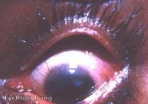

Conjunctiva · Trachoma — corneal manifestations
Corneal manifestations: Pannus
Corneal manifestations of trachoma
- Corneal active infection by trachoma occurs at the same time of conjunctival infection and is not secondary.
- It specifically affects the upper part of the cornea because it is covered by the upper eyelid and thus warmer temperature than the rest of the cornea.
- Corneal manifestations include:
- Pannus.
- Corneal ulcers.
1) Pannus (Curtain like)
It is defined as cellular infiltration together with superficial vascularization of the upper part of the cornea.
- In early stages, cellular infiltration, is between the epithelium and Bowman's membrane.
- Later, this membrane is destroyed resulting in permanent opacity.
- Herbert's rosettes are corneal follicles formed of cellular aggregations and appear as grayish small, elevated nodules at the edge of the active pannus. These heal later, leaving depressed pits at the lower edge of the pannus called Herbert's pits.
